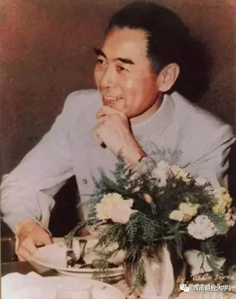

周恩来
初春，夜色下的北京长安街，车辆川流不息，一片灯火辉煌。
当年送他的十里长街，如今已是十里繁华。
这一切，应如斯人所愿。
2018年3月5日，“人民的好总理”周恩来诞辰120周年。
年少时，他写下“为中华之崛起而读书”的豪言；临别好友时，他留下“愿相会于中华腾飞世界时”的赠语。
50多年革命生涯，26载总理重任，他的名字，是中国人民心中永远的怀念。
如今，回眸周恩来工作生活中的点滴片段，有一种穿越时空的力量，让人感动敬仰和震撼，激荡起奋进新时代的内心澎湃……
赤诚之心 许党许国
——“每个人都是普通党员”
有理想信念不难，难的是一生信念如一。
年轻时，周恩来曾说“我认的主义一定是不变了，并且很坚决地要为它宣传奔走”“在任何艰难困苦的情况下，都要以誓死不变的精神为共产主义奋斗到底。”
这一生，他都是坚定的共产党人。